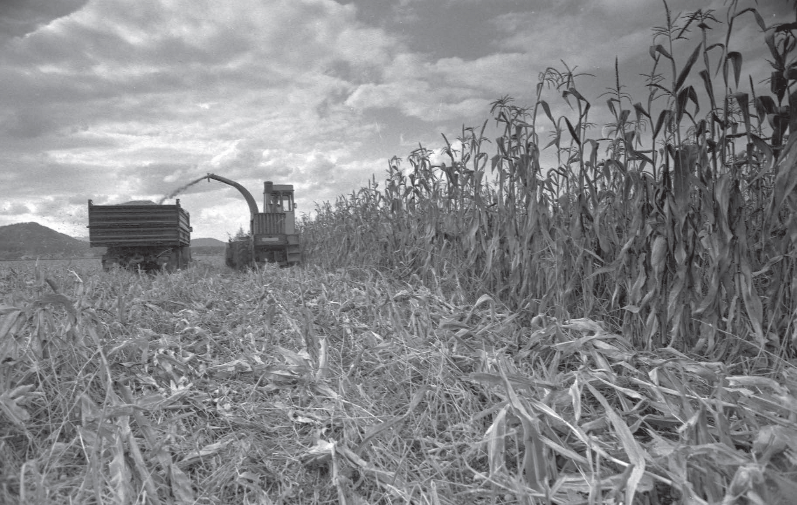
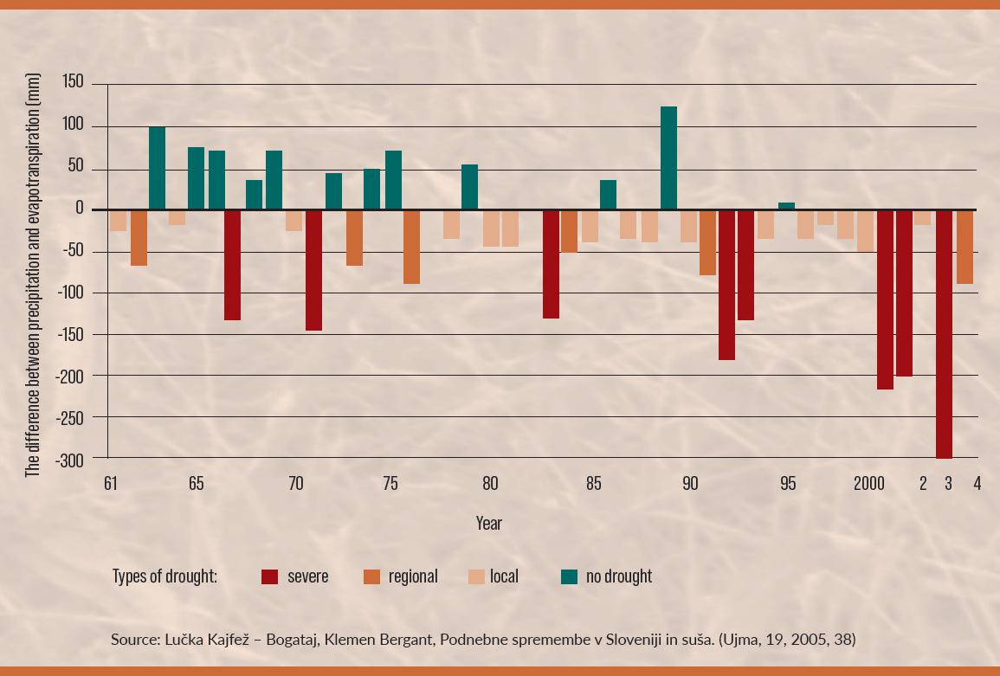
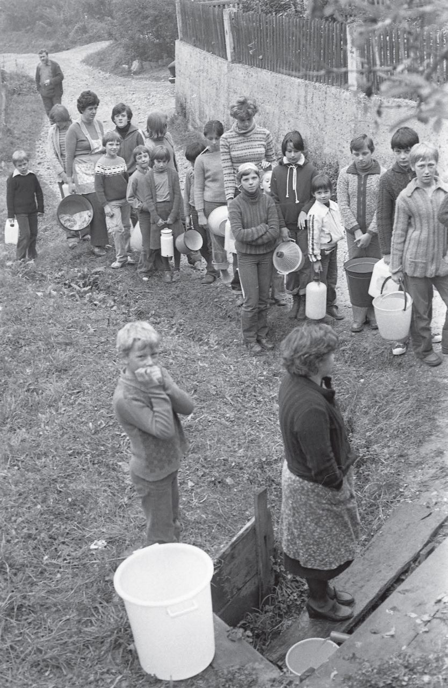
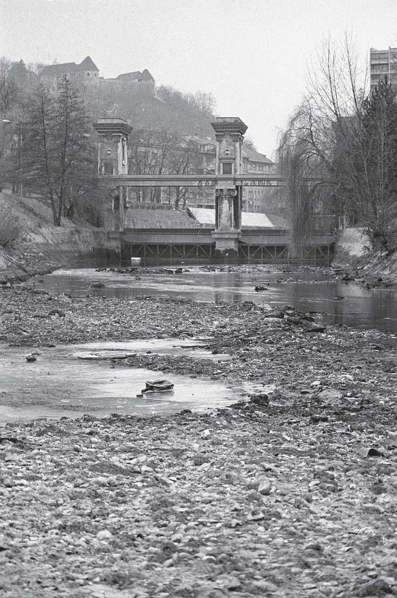
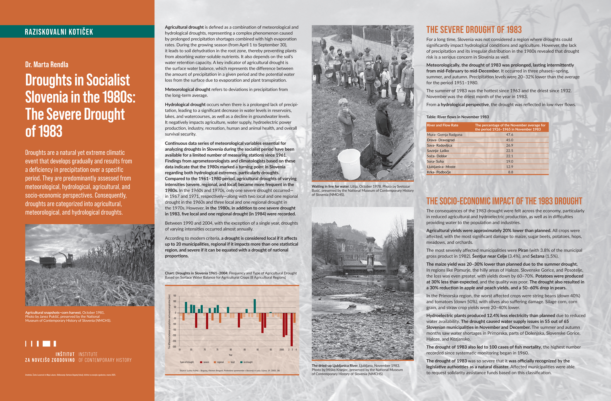

Dr. Marta Rendla
Droughts are a natural yet extreme climatic event that develops gradually and results from a deficiency in precipitation over a specific period. They are predominantly assessed from meteorological, hydrological, agricultural, and socio-economic perspectives. Consequently, droughts are categorized into agricultural, meteorological, and hydrological droughts.

Agricultural drought is defined as a combination of meteorological and hydrological droughts, representing a complex phenomenon caused by prolonged precipitation shortages combined with high evaporation rates. During the growing season (from April 1 to September 30), it leads to soil dehydration in the root zone, thereby preventing plants from absorbing water-soluble nutrients. It also depends on the soil’s water retention capacity. A key indicator of agricultural drought is the surface water balance, which represents the difference between the amount of precipitation in a given period and the potential water loss from the surface due to evaporation and plant transpiration.
Meteorological drought refers to deviations in precipitation from the long-term average.
Hydrological drought occurs when there is a prolonged lack of precipitation, leading to a significant decrease in water levels in reservoirs, lakes, and watercourses, as well as a decline in groundwater levels. It negatively impacts agriculture, water supply, hydroelectric power production, industry, recreation, human and animal health, and overall survival security.
Continuous data series of meteorological variables essential for analyzing droughts in Slovenia during the socialist period have been available for a limited number of measuring stations since 1961. Findings from agrometeorologists and climatologists based on these data indicate that the 1980s marked a turning point in Slovenia regarding both hydrological extremes, particularly droughts. Compared to the 1961–1980 period, agricultural droughts of varying intensities (severe, regional, and local) became more frequent in the 1980s. In the 1960s and 1970s, only one severe drought occurred— in 1967 and 1971, respectively—along with two local and one regional drought in the 1960s and three local and one regional drought in the 1970s. However, in the 1980s, in addition to one severe drought in 1983, five local and one regional drought (in 1984) were recorded.
Between 1990 and 2004, with the exception of a single year, droughts of varying intensities occurred almost annually.
According to modern criteria, a drought is considered local if it affects up to 20 municipalities, regional if it impacts more than one statistical region, and severe if it can be equated with a drought of national proportions.



THE SEVERE DROUGHT OF 1983
For a long time, Slovenia was not considered a region where droughts could significantly impact hydrological conditions and agriculture. However, the lack of precipitation and its irregular distribution in the 1980s revealed that drought risk is a serious concern in Slovenia as well.
Meteorologically, the drought of 1983 was prolonged, lasting intermittently from mid-February to mid-December. It occurred in three phases—spring, summer, and autumn. Precipitation levels were 20–32% lower than the average for the period 1951–1980.
The summer of 1983 was the hottest since 1963 and the driest since 1932. November was the driest month of the year in 1983.
From a hydrological perspective, the drought was reflected in low river flows.
| River and Flow Rate | The percentage of the November average for the period 1926–1965 in November 1983 |
| Mura- Gornja Radgona | 47.6 |
| Drava- Dravograd | 45.0 |
| Sava- Radovljica | 26.9 |
| Savinja- Laško | 22.5 |
| Soča- Doblar | 22.1 |
| Sora- Suha | 19.0 |
| Ljubljanica- Moste | 12.9 |
| Krka- Podbočje | 8.8 |
THE SOCIO-ECONOMIC IMPACT OF THE 1983 DROUGHT
The consequences of the 1983 drought were felt across the economy, particularly in reduced agricultural and hydroelectric production, as well as in difficulties providing water to the population and industries.
Agricultural yields were approximately 20% lower than planned. All crops were affected, with the most significant damage to maize, sugar beets, potatoes, hops, meadows, and orchards.
The most severely affected municipalities were Piran (with 3.8% of the municipal gross product in 1982), Šentjur near Celje (3.4%), and Sežana (1.5%).
The maize yield was 20–30% lower than planned due to the summer drought. In regions like Pomurje, the hilly areas of Haloze, Slovenske Gorice, and Posotelje, the loss was even greater, with yields down by 60–70%. Potatoes were produced at 30% less than expected, and the quality was poor. The drought also resulted in a 30% reduction in apple and peach yields, and a 50–60% drop in pears.
In the Primorska region, the worst affected crops were string beans (down 40%) and tomatoes (down 50%), with olives also suffering damage. Silage corn, corn grain, and straw crop yields were 20–40% lower.
Hydroelectric plants produced 12.4% less electricity than planned due to reduced water availability. The drought caused water supply issues in 55 out of 65 Slovenian municipalities in November and December. The summer and autumn months saw water shortages in Primorska, parts of Dolenjska, Slovenske Gorice, Haloze, and Kozjansko.
The drought of 1983 also led to 100 cases of fish mortality, the highest number recorded since systematic monitoring began in 1960.
The drought of 1983 was so severe that it was officially recognized by the legislative authorities as a natural disaster. Affected municipalities were able to request solidarity assistance funds based on this classification.
***
